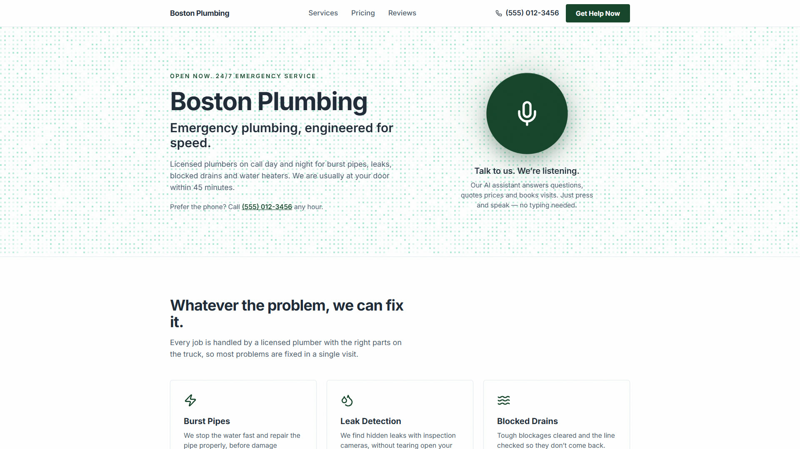
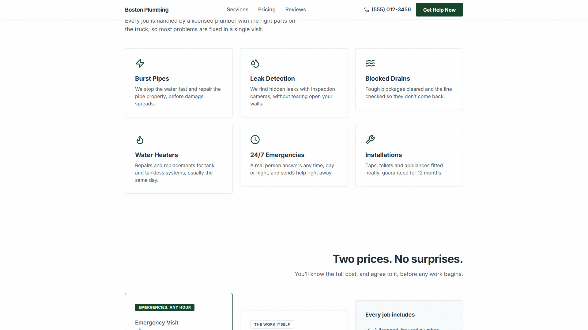

A live Boston plumbing business
bostonplumbing.com


Press. Speak. It answers.
AI-Powered
We’re listening…
You asked:
“
Do you handle burst pipes at 2am?
”
Finding your answer…
Here’s your answer…
Yes — licensed plumbers on call 24/7, usually at your door within 45 minutes.
How it works
Hears you
Whisper · Groq
Thinks
LLaMA reasons over it
Speaks back
Piper text-to-speech
orchestrated in
n8n
· self-hosted · real-time
It’s running inside a plumbing site.
It could run inside yours.
Wayforé Studio
Web + AI automation